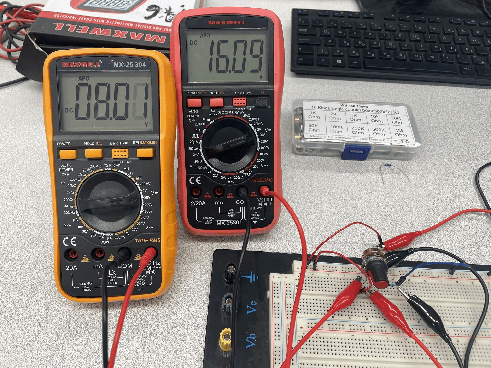
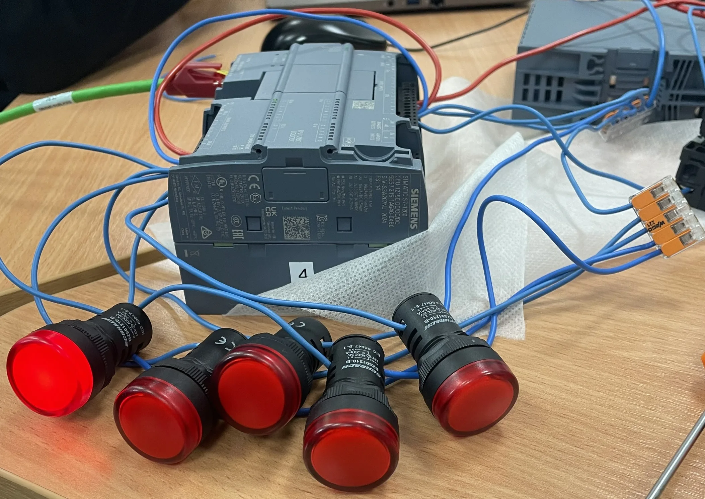

Projektek

Projekt 1 Címe
Rövid leírás a Projekt 1-ről. Itt bemutathatod a főbb jellemzőit vagy a technológiákat.

Projekt 2 Címe
Rövid leírás a Projekt 2-ről. Itt bemutathatod a főbb jellemzőit vagy a technológiákat.
Projekt 3 Címe
Rövid leírás a Projekt 3-ról. Itt bemutathatod a főbb jellemzőit vagy a technológiákat.